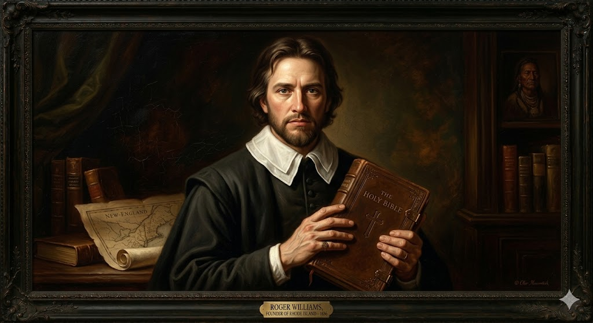
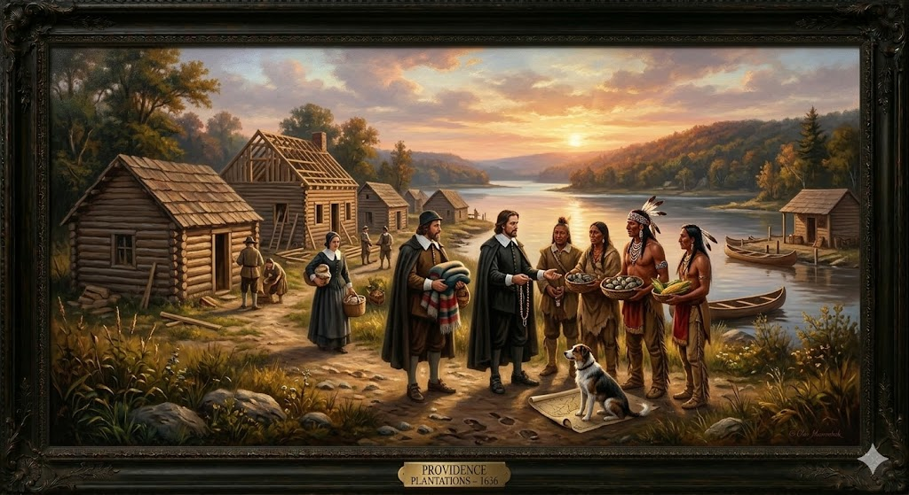

1. שנות פעילות, הקמה ויעדים
שנת הקמה: 1636 (ייסוד העיר פרובידנס).
ישות מקימה: המושבה הוקמה כחיבור של מספר יישובים נפרדים של גולים דתיים. בשנת 1644, השיג רוג'ר ויליאמס פטנט מהפרלמנט הבריטי שאיחד אותם. בשנת 1663 הוענק להם זיכיון מלכותי רשמי (Royal Charter) מהמלך צ'ארלס השני, שהבטיח להם חופש דת מוחלט - מסמך חסר תקדים ששימש כחוקת המדינה עד שנת 1843.
היעדים המקוריים (מקלט למורדים): מטרתה הבלעדית של הקמת המושבה הייתה לשמש עיר מקלט לכל מי שנרדף בגין צו מצפונו. הפוריטנים במסצ'וסטס כינו אותם בלעג "אי הנוכלים" (Rogue's Island) או "פח הזבל של ניו אינגלנד", אך עבור המייסדים, היעד היה להוכיח שחברה אזרחית יכולה לשגשג גם ללא כפייה דתית מטעם המדינה, ולקשור יחסי כבוד וסחר הוגן עם הילידים ללא נישול אדמות בכוח.
2. רקע המייסדים: המורדים הגדולים

רוג'ר ויליאמס (1603–1683)
ילדות ורקע: נולד בלונדון למשפחת סוחרים. כנער הפגין כישרון לשוני מזהיר וזכה לחסותו של סר אדוארד קוק, משפטן אנגלי דגול שחשף אותו למושגי הצדק האנגלי. הוא הוסמך לכמורה באוניברסיטת קיימברידג' והפך לפוריטני אדוק, מה שאילץ אותו להימלט למסצ'וסטס ב-1631.
משבר אמוני והגלות: עם הגעתו לבוסטון, ויליאמס זעזע את הממסד הפוריטני. הוא סירב לכהן בכנסייה משום שלטענתו היא לא התנתקה מספיק מהכנסייה האנגליקנית. גרוע מכך - הוא טען שלמלך אנגליה אין שום זכות להעניק זיכיונות על אדמות אמריקה, משום שהן שייכות בלעדית לאינדיאנים. בית המשפט של ג'ון וינתרופ האשים אותו בהמרדה וגזר עליו גירוש חזרה לאנגליה. כדי להימנע ממעצר, ויליאמס נמלט אל תוך השלג בחורף 1636 וחייו ניצלו בזכות הילידים משבט הנראגנסט (Narragansett).
הישגים: באביב 1636 רכש אדמה מהצ'יפים קנוניקוס ומיאנטונומי, וייסד את העיר "פרובידנס". הוא טבע את המונח "חומת הפרדה" (Wall of Separation) בין הכנסייה לעולם הפוליטי, ויצר את מילון השפות הילידיות הראשון.
אן האצ'ינסון (1591–1643)
ילדות ורקע: נולדה באנגליה כבתו של כומר מורד שישב במאסר בשל דעותיו. היא זכתה לחינוך תיאולוגי נדיר לנשים בתקופתה. היא הפליגה לבוסטון ועבדה כמיילדת ומרפאה - תפקיד שהעניק לה השפעה חברתית עצומה.
משבר אמוני (פולמוס האנטינומיזם): אן החלה לערוך מפגשי לימוד תנ"ך בביתה, אליהם נהרו עשרות נשים ואף גברים רבים. היא קראה תיגר על שלטון הכמרים וטענה שניתן להגיע לגאולה רוחנית ישירה מאלוהים ללא תיווך כנסייתי. היא הועמדה למשפט אינקוויזיטורי ב-1637, הוקעה כ"אישה שאינה מתאימה לחברה", וגורשה בחרפה מהמושבה.
הישגים וסוף טרגי: יחד עם תומכיה, היא עברה דרומה ויסדה ב-1638 את העיירה פורטסמות' על האי אקווידנק (בשטח רוד איילנד). לאחר מות בעלה, עברה למושבה ההולנדית (ניו יורק) בחיפוש אחר שקט, אך נרצחה ב-1643 במהלך פשיטה של שבט אינדיאני זועם.
3. אידאולוגיה: חירות המצפון (Liberty of Conscience)
האידאולוגיה של רוד איילנד הקדימה את זמנה במאות שנים. היא הייתה הניסוי הדמוקרטי הרדיקלי ביותר בעולם של המאה ה-17.
- הפרדת דת ומדינה מוחלטת: בעוד מרילנד הסכימה לסבול רק נוצרים, רוג'ר ויליאמס קבע שהמדינה לא תעניש אף אדם על אמונתו או חוסר אמונתו. בקודקס החוקים הראשון של רוד איילנד לא היה זכר לשבועת נאמנות דתית. המושבה הפכה למקלט למיעוטים נרדפים, כולל קווייקרים (Quakers) ואף קהילות יהודיות (שבנו בניופורט את "בית הכנסת טורו", בית הכנסת העתיק בארה"ב).
- זכויות הילידים: האידאולוגיה המייסדת הכירה בריבונות המוחלטת של האינדיאנים על הארץ. ויליאמס יצר עמם ברית שלום שאפשרה את קיום המושבה עד לפרוץ "מלחמת המלך פיליפ" (1675), אירוע ששבר את לבו של ויליאמס הקשיש.
4. גיאוגרפיה: מפרץ נראגנסט והאיים

מידע הידרולוגי - מפרץ נראגנסט (Narragansett Bay): הגיאוגרפיה של רוד איילנד מוגדרת לחלוטין על ידי הים. זהו אסטואר ענק החודר עמוק אל תוך היבשת ומלא באיים. המפרץ סיפק נמלי מים עמוקים, מוגנים מרוחות האוקיינוס ופתוחים לשיט בכל ימות השנה, ללא הקרח הכבד ששיתק לעיתים את נמלי מסצ'וסטס בחורף.
בחירת המיקום (ההכרח וההזדמנות): ויליאמס לא בחר את המיקום מתוך תוכנית עסקית, אלא מתוך צורך קיומי להימצא מחוץ לגבולות מסצ'וסטס ופלימות', כדי שלא יאסרו אותו שוב. הוא התיישב במעלה נהר הפרובידנס. האדמה לא הייתה פורייה כמו בעמק קונטיקט, מה שהכריח את המושבה לפנות במהרה לפעילות ימית כמקור פרנסה.
5. כלכלה: סחר ימי ורום, בצל העבדות
כלכלת רוד איילנד התפתחה במהירות מהישרדות כפרית למעצמה מסחרית, אך עם צל מוסרי כבד:
- כלכלת הים והסחר החופשי: הגיאוגרפיה הבלתי פורייה דחפה אותם אל הים. העיר ניופורט (Newport) הפכה במהרה לאחד הנמלים העמוסים באמריקה. הם סחרו בדגים, עצים ואספקה חקלאית מול המושבות האחרות והאיים הקריביים. מדיניות ה"אין שאלות" הדתית שלהם משכה סוחרים רבים.
- תעשיית הרום (Rum Distillation): סוחרי רוד איילנד ייבאו כמויות אדירות של דבשה (מולסה) ממטעי הסוכר בקריביים, והקימו עשרות מזקקות. הרום של רוד איילנד נחשב למטבע עובר לסוחר והיווה את הבסיס הכלכלי של המושבה.
- סחר העבדים הטרנס-אטלנטי: זהו הפרדוקס המוסרי הגדול של רוד איילנד. למרות שהמושבה נוסדה על עקרונות החופש (וויליאמס עצמו ניסה להעביר חוק נגד עבדות נצחית ב-1652 ונכשל), במהלך המאה ה-18 סוחרי ניופורט הפכו לשחקנים ראשיים ב"סחר המשולש". הם שלחו רום לאפריקה, החליפו אותו באנשים משועבדים, מכרו את העבדים בקריביים תמורת מולסה, וחזרו איתה לייצור עוד רום. עדויות מצביעות על כך שרוד איילנד שיגרה כ-1,000 מסעות סחר עבדים – יותר מכל מושבה צפונית אחרת.
6. דמוגרפיה: קיבוץ גלויות של מורדים
האוכלוסייה של רוד איילנד הייתה השונה ביותר בנופה של ניו אינגלנד:
- כור היתוך של פליטים: בניגוד להומוגניות הפוריטנית המחמירה של קונטיקט ומסצ'וסטס, האוכלוסייה כאן הורכבה מפסיפס: בפטיסטים, קווייקרים, פריטנים רדיקליים, יהודים, ואפילו פושעים נמלטים שמצאו מקלט. הקהילות הקימו עיירות אוטונומיות (כמו פרובידנס, פורטסמות', ניופורט ווורוויק) שלעיתים קרובות רבו והתווכחו ביניהן על הנהגה.
- שיעורי ילודה ותוחלת חיים: בדומה לשאר ניו אינגלנד, מזג האוויר הקר והעדר הביצות העכורות של הדרום הבטיחו תוחלת חיים גבוהה יחסית.
- מרכזיות עירונית: מכיוון שלא היו כמעט מטעי ענק חקלאיים, רוב האוכלוסייה התרכזה סביב נמלי הים והעיירות. דבר זה יצר חברה עירונית, פלורליסטית, פטפטנית מאוד ובעלת אוריינות גבוהה.
7. מאבקי השליטה: איום הסיפוח והשגת הזיכיון
רוד איילנד הייתה צריכה להילחם בשיניים לא נגד אינדיאנים או מעצמות זרות, אלא נגד שכנותיה האנגליות שרצו להשמיד אותה פוליטית:
הזיכיון המלכותי שמנע סיפוח
- מועדי המאבק: 1643 (ברית הפוריטנים), 1663 (קבלת הזיכיון המלכותי).
- אישים בולטים: רוג'ר ויליאמס, ד"ר ג'ון קלארק (שהפליג לאנגליה כדי לשכנע את המלך), והמלך צ'ארלס השני.
- סיבת המאבק וההישרדות: שכנותיה החזקות של רוד איילנד (מסצ'וסטס, פלימות' וקונטיקט) ראו בה "קן של כופרים". בשנת 1643 הן הקימו ברית צבאית בשם "קונפדרציית ניו אינגלנד" ונידו את רוד איילנד מתוכה במכוון, תוך איום תדיר לפלוש אליה ולחלק את אדמותיה ביניהן. כדי לשרוד את האיום, רוג'ר ויליאמס הפליג לאנגליה והשיג פטנט הגנה ראשוני מהפרלמנט. אולם, ההישג הדיפלומטי האמיתי קרה ב-1663. ד"ר ג'ון קלארק הצליח לשכנע את המלך החדש, צ'ארלס השני, להעניק לרוד איילנד "זיכיון מלכותי" (Royal Charter of 1663). הזיכיון הזה היה מסמך היסטורי מדהים: הוא חרט בחוק את חופש הדת המוחלט ואת העצמאות הפוליטית של המושבה, ואסר מפורשות על מסצ'וסטס להתערב בענייניה. זיכיון זה שימש כחוקת המדינה במשך כמעט מאתיים שנה!
8. מחקר אטימולוגי: Rhode Island & Providence
Providence (פרובידנס)
מקור: לטיניתנגזר מהמילה הלטינית Providentia (ראיית הנולד / השגחה). המשמעות היא "השגחה אלוהית". זהו השם שהעניק רוג'ר ויליאמס ליישוב הראשון שהקים. הוא האמין בכל ליבו שרק "השגחתו הרחומה של אלוהים" היא שהנחתה אותו אל המקלט הבטוח בקרב הילידים בעת שברח למען חייו בשלג.
Rhode (תאוריה א' - יוון)
מקור: איטלקית/יווניתחוקר הארצות האיטלקי ג'ובאני דה וראצאנו (1524) כתב ביומנו שמצא אי במפרץ נראגנסט שגודלו דמה לזה של האי היווני רודוס (Rhodes). הפוריטנים קראו את יומנו וכנראה אימצו את השם בטעות עבור האי הגדול של המפרץ (Aquidneck Island).
Roodt (תאוריה ב' - הולנד)
מקור: הולנדית עתיקהנווט הולנדי בשם אדריאן בלוק מיפה את האזור ב-1614 וכינה את האי "Roodt Eylandt", שמשמעותו "האי האדום", זאת כנראה בשל העלווה האדומה של הסתיו או חימר אדמדם שהבחין בו בחופים. מאוחר יותר עבר השם אנגליזציה טבעית ל-Rhode Island.
הלחם והשמטת השם (2020)
השם המלא בזיכיון שילב את שם האי (שבו ישבו מתנגדיה של אן האצ'ינסון) עם אזור היבשת שנקרא פרובידנס. המילה "Plantations" (מטעים) התייחסה במקור למושג האנגלי העתיק של "לשתול התיישבות", אך במאות המאוחרות יותר המילה נקשרה בארצות הברית באופן בלתי נפרד למטעי העבדות של הדרום. לכן, בשנת 2020, הצביעו אזרחי המדינה על מחיקת המילה והמדינה שינתה את שמה רשמית ל"רוד איילנד" בלבד.